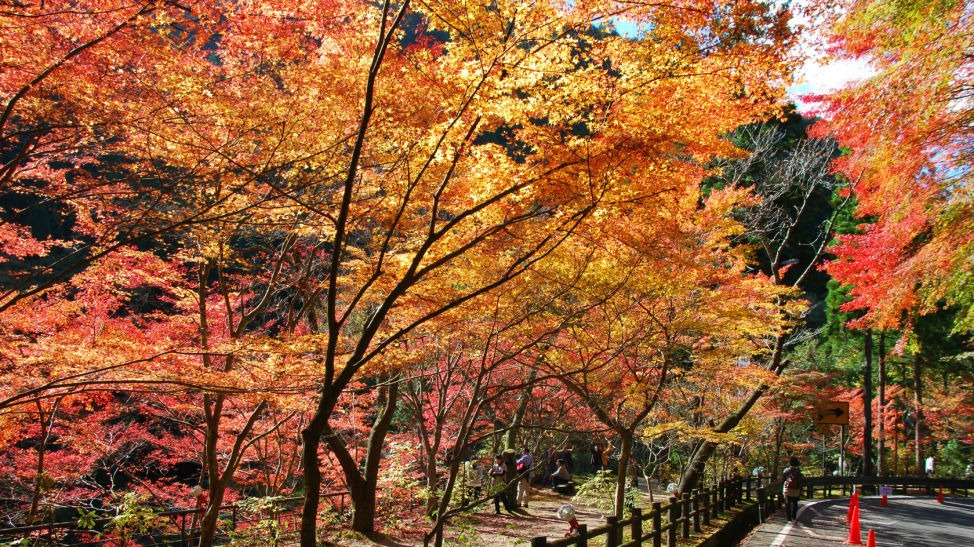

特産・グルメ
鏡野町の特産品は、季節の変化とともに多彩な色彩を見せ、その味わいは四季折々の恵みを感じさせます。


主要施設・スポット
四季折々の美しい風景と魅力的なスポットで人々を魅了する場所をご案内いたします。



鏡野町の特産品は、季節の変化とともに多彩な色彩を見せ、その味わいは四季折々の恵みを感じさせます。
四季折々の美しい風景と魅力的なスポットで人々を魅了する場所をご案内いたします。
〒708-0392 岡山県苫田郡鏡野町竹田660